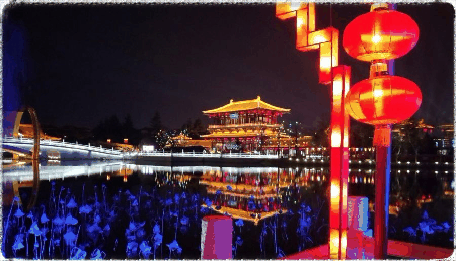
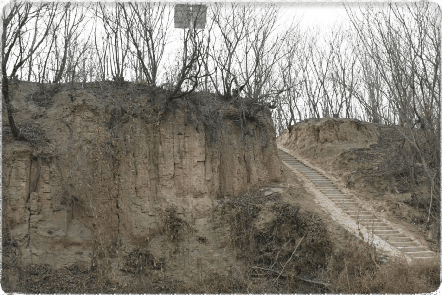
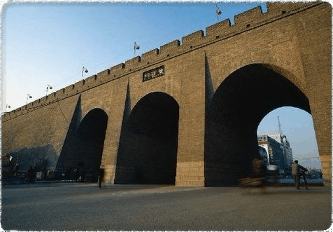
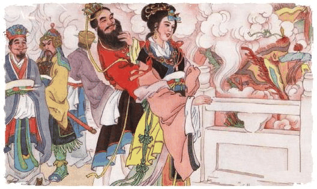

【秦简拓语·十一】历史长河滚滚向前，永不停息
伫在原地遐想只会让内心更加迷茫与好奇；行在路上而不加以思考如同走马观花。思者无域，行者无疆，思行无散，疆域无垠。带着对陕西历史古都的探索之心，我们来到了西安。
“十三朝古都”、“世界四大古都之一”等标签都体现出西安是承载了千年悠久历史的城池，虽然历朝历代的景象我们已无法再亲眼见证，但这座城池留下的许多遗迹却能够让我们在前进的路上思考和想象从前的存在，我想着这也是行者路途的意义之一。


从中国历史上第一个大一统王朝秦朝说起，暂且不提万里长城的工程之浩大，现在依然存留的秦朝阿房宫前殿夯土基址遗存对我的内心给予了极大的震撼。从阿房宫广场走上夯土一侧，再从夯土另一侧小心翼翼地通过崎岖小路走下马路的过程中，我一直想着为什么这地势如此独特，就像是山被水平分割了似的。后来在当地居民的讲述之下，我才知道原来刚刚走着的“山”是高12米，东西长1270米，南北宽426米的阿房宫前殿夯土。

但这只是阿房宫的前殿部分，而阿房宫的总面积是15平方公里，可见其夸张程度。历史上阿房宫的建造导致民不聊生，加速了秦朝的灭亡，而秦朝从开创到灭亡用了仅仅15年。
“山河千里国，城阙九重门，
不睹皇居壮，安知天子尊”
——骆宾王《帝京篇》
“国破山河在，城春草木深。
感时花溅泪，恨别鸟惊心”
——杜甫《春望》

这两句诗分别反映出了大唐的繁荣一时以及衰败没落的场景，而其中间隔的时间不到300年，不及之前的周汉。我们所住的青年旅社马路对面不远便是朱雀门，在历史中的记载，玄奘法师回唐，朱雀门外二十多里的道路上，围满了欢迎的百姓，争观的百姓人山人海，从朱雀门到玄奘所住的弘福寺，排成了几十里长的队伍，焚香散花，鼓乐喧天，好不热闹。在明城墙之上，我的脑海不断浮现出这些大唐繁荣一世的画面，但如此繁荣一世的唐朝也不免走向灭亡。

骊山的华清宫让我们了解到了唐玄宗和杨贵妃爱恨情仇的故事，同时在骊山不远西绣岭第一峰也有着周幽王烽火戏诸侯的故事。从骊山到马嵬坡，杨贵妃无奈自缢，也象征着唐朝已经无比衰弱；周幽王最后也因为失去诸侯的信任被攻破镐京的犬戎杀死。历史上的朝代兴盛衰败总是惊人的相似，这不免引起人们的思考。



历史不能重来，我们从历史长河中，总结中华五千年从辉煌到衰败、再到重新崛起的历史经验教训，对国家和我们自己都是一种思考。有些历史已经让我们的前辈付出过沉重的代价，重复这种历史只会让我们付出更加惨痛的代价。品读历史朝代的兴衰和更替，吸收其他国家和各民族的历史教训和经验，是面向未来的武器。
来源丨行者无疆实践团
文字丨邓子孚
排版丨邓子孚
审核丨潘雯雯 邓子孚
行者无疆实践团
QQ：2758025831

随行者一起认识世界
长按二维码关注